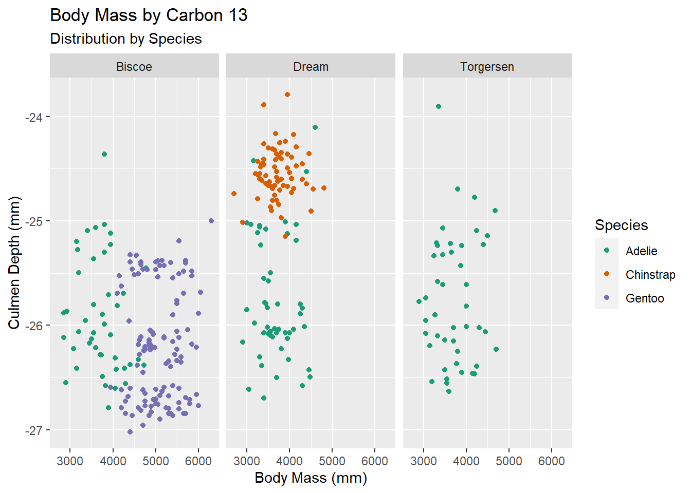

#load needed packages.
require(dplyr) #for data processing/cleaning
require(tidyr) #for data processing/cleaning
require(skimr) #for nice visualization of data Cleaning the Palmer Penguins Raw Data
Setup
Load needed packages.
Data loading
#path to data
data_location <- "../../Data/Raw_data/penguins_raw_dirty.csv"
data_path <- "../../Data/Raw_data/"
#load data.
# I am using check.names=F because these names have spaces and parentheses
# and I want to preserve the original names.
rawdata <- read.csv(data_location, check.names=FALSE)Data Under Examination
I am working with the Palmer Penguins dataset. After establishing the correct path and working directory, I used skimr to examine the state of the data. For clarity, I have added the data dictionary at the end of this summary.
skim(rawdata)| Name | rawdata |
| Number of rows | 344 |
| Number of columns | 17 |
| _______________________ | |
| Column type frequency: | |
| character | 11 |
| numeric | 6 |
| ________________________ | |
| Group variables | None |
Variable type: character
| skim_variable | n_missing | complete_rate | min | max | empty | n_unique | whitespace |
|---|---|---|---|---|---|---|---|
| studyName | 0 | 1.00 | 7 | 7 | 0 | 3 | 0 |
| Species | 0 | 1.00 | 33 | 41 | 0 | 9 | 0 |
| Region | 0 | 1.00 | 6 | 6 | 0 | 1 | 0 |
| Island | 0 | 1.00 | 5 | 9 | 0 | 3 | 0 |
| Stage | 0 | 1.00 | 18 | 18 | 0 | 1 | 0 |
| Individual ID | 0 | 1.00 | 4 | 6 | 0 | 190 | 0 |
| Clutch Completion | 0 | 1.00 | 2 | 3 | 0 | 2 | 0 |
| Date Egg | 0 | 1.00 | 10 | 10 | 0 | 50 | 0 |
| Culmen Length (mm) | 1 | 1.00 | 2 | 7 | 0 | 168 | 0 |
| Sex | 11 | 0.97 | 4 | 6 | 0 | 2 | 0 |
| Comments | 290 | 0.16 | 18 | 68 | 0 | 10 | 0 |
Variable type: numeric
| skim_variable | n_missing | complete_rate | mean | sd | p0 | p25 | p50 | p75 | p100 | hist |
|---|---|---|---|---|---|---|---|---|---|---|
| Sample Number | 0 | 1.00 | 63.15 | 40.43 | 1.00 | 29.00 | 58.00 | 95.25 | 152.00 | ▇▇▆▅▃ |
| Culmen Depth (mm) | 2 | 0.99 | 17.15 | 1.97 | 13.10 | 15.60 | 17.30 | 18.70 | 21.50 | ▅▅▇▇▂ |
| Flipper Length (mm) | 2 | 0.99 | 200.92 | 14.06 | 172.00 | 190.00 | 197.00 | 213.00 | 231.00 | ▂▇▃▅▂ |
| Body Mass (g) | 2 | 0.99 | 4159.78 | 888.53 | 47.00 | 3550.00 | 4000.00 | 4750.00 | 6300.00 | ▁▁▇▇▃ |
| Delta 15 N (o/oo) | 14 | 0.96 | 8.73 | 0.55 | 7.63 | 8.30 | 8.65 | 9.17 | 10.03 | ▃▇▆▅▂ |
| Delta 13 C (o/oo) | 13 | 0.96 | -25.69 | 0.79 | -27.02 | -26.32 | -25.83 | -25.06 | -23.79 | ▆▇▅▅▂ |
dictionary <- read.csv(paste(data_path, "datadictionary.csv", sep=""))
print(dictionary) variable
1 studyName
2 Sample Number
3 Species
4 Region
5 Island
6 Stage
7 Individual ID
8 Clutch Completion
9 Date Egg
10 Culmen Length
11 Culmen Depth
12 Flipper Length
13 Body Mass
14 Sex
15 Delta 15 N
16 Delta 13 C
17 Comments
description
1 Sampling expedition from which data were collected, generated, etc.
2 an integer denoting the continuous numbering sequence for each sample
3 a character string denoting the penguin species
4 a character string denoting the region of Palmer LTER sampling grid
5 a character string denoting the island near Palmer Station where samples were collected
6 a character string denoting reproductive stage at sampling
7 a character string denoting the unique ID for each individual in dataset
8 a character string denoting if the study nest observed with a full clutch, i.e., 2 eggs
9 a date denoting the date study nest observed with 1 egg (sampled)
10 a number denoting the length of the dorsal ridge of a bird's bill (millimeters)
11 a number denoting the depth of the dorsal ridge of a bird's bill (millimeters)
12 an integer denoting the length penguin flipper (millimeters)
13 an integer denoting the penguin body mass (grams)
14 a character string denoting the sex of an animal
15 a number denoting the measure of the ratio of stable isotopes 15N:14N
16 a number denoting the measure of the ratio of stable isotopes 13C:12C
17 a character string with text providing additional relevant information for dataCleaning
Taking a moment to examine the skimr summary, a couple of problems become apparent. Under the character variables, I can see that the number of unique species is wrong (listed as 9 whereas the Palmer Penguins dataset is based on 3) and that the Culmen Length (mm), which should be listed as numeric, is present. This is is where I begin the data cleaning process.
I started with an examination of species.
Species names
Knowing that the Palmer Penguins set assesses only 3 species, I wanted see why my data lists 9. In calling for the unique variables it is apparent that the discrepancy comes from typos in the data set.
unique(rawdata$Species)[1] "Adelie Penguin (Pygoscelis adeliae)"
[2] "Adelie PengTin (Pygoscelis adeliae)"
[3] "Adelie Pengufn (Pygoscelis adeliae)"
[4] "Adelie PeOguin (Pygoscelis adeliae)"
[5] "AdeKie Penguin (Pygoscelis adeliae)"
[6] "AdelieMPenguin (Pygoscelis adeliae)"
[7] "Gentoo penguin (Pygoscelis papua)"
[8] "Ventoo penguin (Pygoscelis papua)"
[9] "Chinstrap penguin (Pygoscelis antarctica)"To solve this problem I used the gsub() and sub() functions.
d1 <- rawdata
d1$Species <- gsub("ngufn", "nguin", gsub("eKie", "elie", gsub("gTin", "guin", d1$Species)))
d1$Species <- gsub("Peog", "peng", gsub("Peng", "peng", gsub("Vent", "Gent", gsub("eOg", "eog", d1$Species))))
#My third step was a single sub event
#For some reason, subing a space for the "M" would not work as a part of my group sub.
d1$Species <- sub("AdelieMp", "Adelie p", d1$Species)
unique(d1$Species)[1] "Adelie penguin (Pygoscelis adeliae)"
[2] "Gentoo penguin (Pygoscelis papua)"
[3] "Chinstrap penguin (Pygoscelis antarctica)"With the typos fixed I decided to shorten the species names to their common names.
ii <- grep("(Pygoscelis adeliae)", d1$Species)
d1$Species[ii] <- "Adelie"
ii <- grep("(Pygoscelis papua)", d1$Species)
d1$Species[ii] <- "Gentoo"
ii <- grep("(Pygoscelis antarctica)", d1$Species)
d1$Species[ii] <- "Chinstrap"
unique(d1$Species)[1] "Adelie" "Gentoo" "Chinstrap"#I checked this again by repeating the skimr operation
skim(d1)| Name | d1 |
| Number of rows | 344 |
| Number of columns | 17 |
| _______________________ | |
| Column type frequency: | |
| character | 11 |
| numeric | 6 |
| ________________________ | |
| Group variables | None |
Variable type: character
| skim_variable | n_missing | complete_rate | min | max | empty | n_unique | whitespace |
|---|---|---|---|---|---|---|---|
| studyName | 0 | 1.00 | 7 | 7 | 0 | 3 | 0 |
| Species | 0 | 1.00 | 6 | 9 | 0 | 3 | 0 |
| Region | 0 | 1.00 | 6 | 6 | 0 | 1 | 0 |
| Island | 0 | 1.00 | 5 | 9 | 0 | 3 | 0 |
| Stage | 0 | 1.00 | 18 | 18 | 0 | 1 | 0 |
| Individual ID | 0 | 1.00 | 4 | 6 | 0 | 190 | 0 |
| Clutch Completion | 0 | 1.00 | 2 | 3 | 0 | 2 | 0 |
| Date Egg | 0 | 1.00 | 10 | 10 | 0 | 50 | 0 |
| Culmen Length (mm) | 1 | 1.00 | 2 | 7 | 0 | 168 | 0 |
| Sex | 11 | 0.97 | 4 | 6 | 0 | 2 | 0 |
| Comments | 290 | 0.16 | 18 | 68 | 0 | 10 | 0 |
Variable type: numeric
| skim_variable | n_missing | complete_rate | mean | sd | p0 | p25 | p50 | p75 | p100 | hist |
|---|---|---|---|---|---|---|---|---|---|---|
| Sample Number | 0 | 1.00 | 63.15 | 40.43 | 1.00 | 29.00 | 58.00 | 95.25 | 152.00 | ▇▇▆▅▃ |
| Culmen Depth (mm) | 2 | 0.99 | 17.15 | 1.97 | 13.10 | 15.60 | 17.30 | 18.70 | 21.50 | ▅▅▇▇▂ |
| Flipper Length (mm) | 2 | 0.99 | 200.92 | 14.06 | 172.00 | 190.00 | 197.00 | 213.00 | 231.00 | ▂▇▃▅▂ |
| Body Mass (g) | 2 | 0.99 | 4159.78 | 888.53 | 47.00 | 3550.00 | 4000.00 | 4750.00 | 6300.00 | ▁▁▇▇▃ |
| Delta 15 N (o/oo) | 14 | 0.96 | 8.73 | 0.55 | 7.63 | 8.30 | 8.65 | 9.17 | 10.03 | ▃▇▆▅▂ |
| Delta 13 C (o/oo) | 13 | 0.96 | -25.69 | 0.79 | -27.02 | -26.32 | -25.83 | -25.06 | -23.79 | ▆▇▅▅▂ |
Shortening the Dataset
After a couple rounds of skimr I decided to cut down on some of the unnecessary variables for this analysis. This cleaned things up a bit and saved space.
For this task I first shortened the variable names followed by subsetting out columns that were not needed. I also decided to change Species, Island, and Sex to Factors here instead of later. This not only really cleaned up the data summary but highlighted the misdesignation of Culmen Length as a character value.
names(d1)[1:4] <- c("study", "sample", "Species", "Region")
names(d1)[5:10] <- c("Island", "stage", "ID", "Clutch", "Date", "Culmen Length")
names(d1)[11:17] <- c("Culmen Depth", "Flipper Length", "Body Mass", "Sex", "Delta 15 N", "Delta 13 C", "Comments")
#Here I decided to remove information (columns) that were not useful.
d1 <- subset(d1, select = -c(study, ID, sample, stage, Date, Comments, Region, Clutch))
d1$Species <- as.factor(d1$Species)
d1$Sex <- as.factor(d1$Sex)
d1$Island <- as.factor(d1$Island)
skim(d1)| Name | d1 |
| Number of rows | 344 |
| Number of columns | 9 |
| _______________________ | |
| Column type frequency: | |
| character | 1 |
| factor | 3 |
| numeric | 5 |
| ________________________ | |
| Group variables | None |
Variable type: character
| skim_variable | n_missing | complete_rate | min | max | empty | n_unique | whitespace |
|---|---|---|---|---|---|---|---|
| Culmen Length | 1 | 1 | 2 | 7 | 0 | 168 | 0 |
Variable type: factor
| skim_variable | n_missing | complete_rate | ordered | n_unique | top_counts |
|---|---|---|---|---|---|
| Species | 0 | 1.00 | FALSE | 3 | Ade: 152, Gen: 124, Chi: 68 |
| Island | 0 | 1.00 | FALSE | 3 | Bis: 168, Dre: 124, Tor: 52 |
| Sex | 11 | 0.97 | FALSE | 2 | MAL: 168, FEM: 165 |
Variable type: numeric
| skim_variable | n_missing | complete_rate | mean | sd | p0 | p25 | p50 | p75 | p100 | hist |
|---|---|---|---|---|---|---|---|---|---|---|
| Culmen Depth | 2 | 0.99 | 17.15 | 1.97 | 13.10 | 15.60 | 17.30 | 18.70 | 21.50 | ▅▅▇▇▂ |
| Flipper Length | 2 | 0.99 | 200.92 | 14.06 | 172.00 | 190.00 | 197.00 | 213.00 | 231.00 | ▂▇▃▅▂ |
| Body Mass | 2 | 0.99 | 4159.78 | 888.53 | 47.00 | 3550.00 | 4000.00 | 4750.00 | 6300.00 | ▁▁▇▇▃ |
| Delta 15 N | 14 | 0.96 | 8.73 | 0.55 | 7.63 | 8.30 | 8.65 | 9.17 | 10.03 | ▃▇▆▅▂ |
| Delta 13 C | 13 | 0.96 | -25.69 | 0.79 | -27.02 | -26.32 | -25.83 | -25.06 | -23.79 | ▆▇▅▅▂ |
Continuous data
Culmen Length
The next apparent issue is the classification of Culmen Length as a character value. I first examined the Culmen Length dataset to see why this might be listed as such.
cl <- d1$`Culmen Length`
#I'm just showing the head of Culmen Length here to save space. Since the error shows up in first row, the head is all that is needed.
head(cl)[1] "39.1" "39.5" "40.3" "missing" "36.7" "39.3" The issue appeared to be the value designated as “missing”. This transformed the value (and all others) into character values. The solution was to change “missing” to NA and then coerce all values for Culmen Length to numeric.
cl[ cl == "missing" ] <- NA
cl <- as.numeric(cl)
d1$`Culmen Length` <- clWhen I skimr again it is clear that this value is now classified appropriately. In the data summary, however, something seemed strange about the distribution of values within Culmen Length. I examined this distribution with a histogram and a bivariate plot with Body Mass.
skim(d1)| Name | d1 |
| Number of rows | 344 |
| Number of columns | 9 |
| _______________________ | |
| Column type frequency: | |
| factor | 3 |
| numeric | 6 |
| ________________________ | |
| Group variables | None |
Variable type: factor
| skim_variable | n_missing | complete_rate | ordered | n_unique | top_counts |
|---|---|---|---|---|---|
| Species | 0 | 1.00 | FALSE | 3 | Ade: 152, Gen: 124, Chi: 68 |
| Island | 0 | 1.00 | FALSE | 3 | Bis: 168, Dre: 124, Tor: 52 |
| Sex | 11 | 0.97 | FALSE | 2 | MAL: 168, FEM: 165 |
Variable type: numeric
| skim_variable | n_missing | complete_rate | mean | sd | p0 | p25 | p50 | p75 | p100 | hist |
|---|---|---|---|---|---|---|---|---|---|---|
| Culmen Length | 2 | 0.99 | 47.60 | 39.89 | 32.10 | 39.23 | 44.50 | 48.58 | 511.00 | ▇▁▁▁▁ |
| Culmen Depth | 2 | 0.99 | 17.15 | 1.97 | 13.10 | 15.60 | 17.30 | 18.70 | 21.50 | ▅▅▇▇▂ |
| Flipper Length | 2 | 0.99 | 200.92 | 14.06 | 172.00 | 190.00 | 197.00 | 213.00 | 231.00 | ▂▇▃▅▂ |
| Body Mass | 2 | 0.99 | 4159.78 | 888.53 | 47.00 | 3550.00 | 4000.00 | 4750.00 | 6300.00 | ▁▁▇▇▃ |
| Delta 15 N | 14 | 0.96 | 8.73 | 0.55 | 7.63 | 8.30 | 8.65 | 9.17 | 10.03 | ▃▇▆▅▂ |
| Delta 13 C | 13 | 0.96 | -25.69 | 0.79 | -27.02 | -26.32 | -25.83 | -25.06 | -23.79 | ▆▇▅▅▂ |
hist(d1$`Culmen Length`)plot(d1$`Body Mass`, d1$`Culmen Length`)There are two noticable issues with the bivariate plot. When examining both plots, it is apparent that there are three major outliers in Culmen Length. Additionally, the bivariate plot shows Body Mass outliers. I tackled the issues with Culmen Length first. In handling the problematic data, I am told that the outliers represent a missed decimal point. Thus, my goal is to remedy the data points instead of removing them.
d2 <- d1
#I needed to exclude NAs while indexing
#if I was going to fix the numeric values.
cl[ !is.na(cl) & cl>300 ][1] 429 511 457#Since the typo is a missed decimal point,
#I simply divided the values by 10.
cl[ !is.na(cl) & cl>300 ] <- cl[ !is.na(cl) & cl>300 ]/10
d2$`Culmen Length` <- cl
#culmen length values seem ok now
hist(d2$`Culmen Length`)plot(d2$`Body Mass`, d2$`Culmen Length`)Culmen Length looks much better. Next task was Body Mass.
Body Mass
hist(d2$`Body Mass`)There are penguins with body mass of <100g with all others are over 3000g. With no evidence of this being a typo, the best course of action is to remove the values. Given that Mass is the main size variable I needed to also remove any missing values. This simplified the work a bit as I was able to replace the outlier values with NA and then remove all missing values.
d3 <- d2
mm <- d3$`Body Mass`
mm[ mm < 100 ] <- NA
#In order to remove the NAs,
#I first needed to identify their positions.
nas <- which( is.na(mm) )
d3 <- d3[ -nas, ]
hist(d3$`Body Mass`)plot(d3$`Body Mass`, d3$`Culmen Length`)Culmen Depth
The next variable I looked at was Culmen Depth. I start here with a histogram.
hist(d3$'Culmen Depth')
This doesn’t look too bad but I’ll plot it with Body Mass to be sure.
plot(d3$'Body Mass', d3$'Culmen Depth')
This is an interesting distribution. It didn’t strike me as an error, but I decided to check why the data looks this way. To do so, my first instinct was to differentiate between the species. For this I used ggplot.
#Cumen Depth by Body Mass
require(ggplot2)Loading required package: ggplot2p <- d3 |> ggplot() +
geom_point(aes(x= d3$'Body Mass', y = d3$'Culmen Depth', col=Species))
pMy instincts were on point. The distribution makes much more sense when you can see the groups. I don’t believe there is anything that needs editing here.
Though not surprising, it is also interesting to see that this distribution correlates with species diversity on different islands.
p <- d3 |> ggplot() +
geom_point(aes(x= d3$'Body Mass', y = d3$'Culmen Depth', col=Island))
p
Flipper Length
The last morphological variable is Flipper Length. I began again with a histogram and bivariate plot with Body Mass to check the distribution.
#Check distribution
hist(d3$'Flipper Length')plot(d3$'Body Mass', d3$'Flipper Length')This data shows a pretty normal scaling of Flipper Length with Body Mass. There is no need to investigate any further. That said, the histogram does show an interesting dip in the median range. This again can be explained by mapping the species distribution for these values.
p <- d3 |> ggplot() +
geom_point(aes(x= d3$'Body Mass', y = d3$'Flipper Length', col=Species))
pIsotopic Data
Nitrogen
The last sets of continuous data in the Palmer Penguins dataset compiles isotopic measures from the three species.
Beginning with the Nitrogen data, I set a histogram to observe the distribution. Though I didn’t expect this metric to scale with Body Mass like the morphological data, I set the bivariate plot to check. This plot, interestingly, revealed a negative correlation with Body Mass.
hist(d3$'Delta 15 N')plot(d3$'Body Mass', d3$'Delta 15 N')
My next thought was that this correlation will more strongly reflect habitat/dietary differences in the populations. Thus, I decided to plot the data with Species instead of Mass.
plot(d3$'Species', d3$'Delta 15 N')This data seems to make sense. No editing needed.
Carbon
Finally, I ran the same set of tests with the Carbon data as I did the Nitrogen data.
hist(d3$'Delta 13 C')plot(d3$'Body Mass', d3$'Delta 13 C')It was, again, difficult for me to see if this data was behaving in a logical way. To make sure that it was, I again decided to represent it as grouped by species. When plotting it this way, the distribution of data looks normal and therefore required no editing.
p <- d3 |> ggplot() +
geom_point(aes(x= d3$'Body Mass', y = d3$'Delta 13 C', col=Species))
pWarning: Removed 11 rows containing missing values (`geom_point()`).
Data is Clean
With the last of the variables tested, I believe this data is good to go.
#Final review of data and edited data dictionary
processeddata <- d3
skim(processeddata)| Name | processeddata |
| Number of rows | 339 |
| Number of columns | 9 |
| _______________________ | |
| Column type frequency: | |
| factor | 3 |
| numeric | 6 |
| ________________________ | |
| Group variables | None |
Variable type: factor
| skim_variable | n_missing | complete_rate | ordered | n_unique | top_counts |
|---|---|---|---|---|---|
| Species | 0 | 1.00 | FALSE | 3 | Ade: 151, Gen: 120, Chi: 68 |
| Island | 0 | 1.00 | FALSE | 3 | Bis: 164, Dre: 124, Tor: 51 |
| Sex | 9 | 0.97 | FALSE | 2 | MAL: 168, FEM: 162 |
Variable type: numeric
| skim_variable | n_missing | complete_rate | mean | sd | p0 | p25 | p50 | p75 | p100 | hist |
|---|---|---|---|---|---|---|---|---|---|---|
| Culmen Length | 0 | 1.00 | 43.90 | 5.47 | 32.10 | 39.20 | 44.40 | 48.50 | 59.60 | ▅▇▇▆▁ |
| Culmen Depth | 0 | 1.00 | 17.17 | 1.97 | 13.10 | 15.65 | 17.30 | 18.70 | 21.50 | ▅▅▇▇▂ |
| Flipper Length | 0 | 1.00 | 200.79 | 14.05 | 172.00 | 190.00 | 197.00 | 213.00 | 231.00 | ▂▇▃▅▂ |
| Body Mass | 0 | 1.00 | 4196.17 | 803.20 | 2700.00 | 3550.00 | 4000.00 | 4750.00 | 6300.00 | ▃▇▅▃▂ |
| Delta 15 N | 12 | 0.96 | 8.74 | 0.55 | 7.63 | 8.30 | 8.66 | 9.18 | 10.03 | ▃▇▆▅▂ |
| Delta 13 C | 11 | 0.97 | -25.68 | 0.79 | -27.02 | -26.32 | -25.83 | -25.06 | -23.79 | ▆▇▅▅▂ |
dictionary <- read.csv(paste(data_path, "datadictionary2.0.csv", sep=""))
print(dictionary) variable
1 Species
2 Region
3 Island
4 Culmen Length
5 Culmen Depth
6 Flipper Length
7 Body Mass
8 Sex
9 Delta 15 N
10 Delta 13 C
X..description.
1 "a character string denoting the penguin species"
2 "a character string denoting the region of Palmer LTER sampling grid"
3 "a character string denoting the island near Palmer Station where samples were collected"
4 "a number denoting the length of the dorsal ridge of a bird's bill (millimeters)"
5 "a number denoting the depth of the dorsal ridge of a bird's bill (millimeters)"
6 "an integer denoting the length penguin flipper (millimeters)"
7 "an integer denoting the penguin body mass (grams)"
8 "a character string denoting the sex of an animal"
9 "a number denoting the measure of the ratio of stable isotopes 15N:14N"
10 "a number denoting the measure of the ratio of stable isotopes 13C:12C"